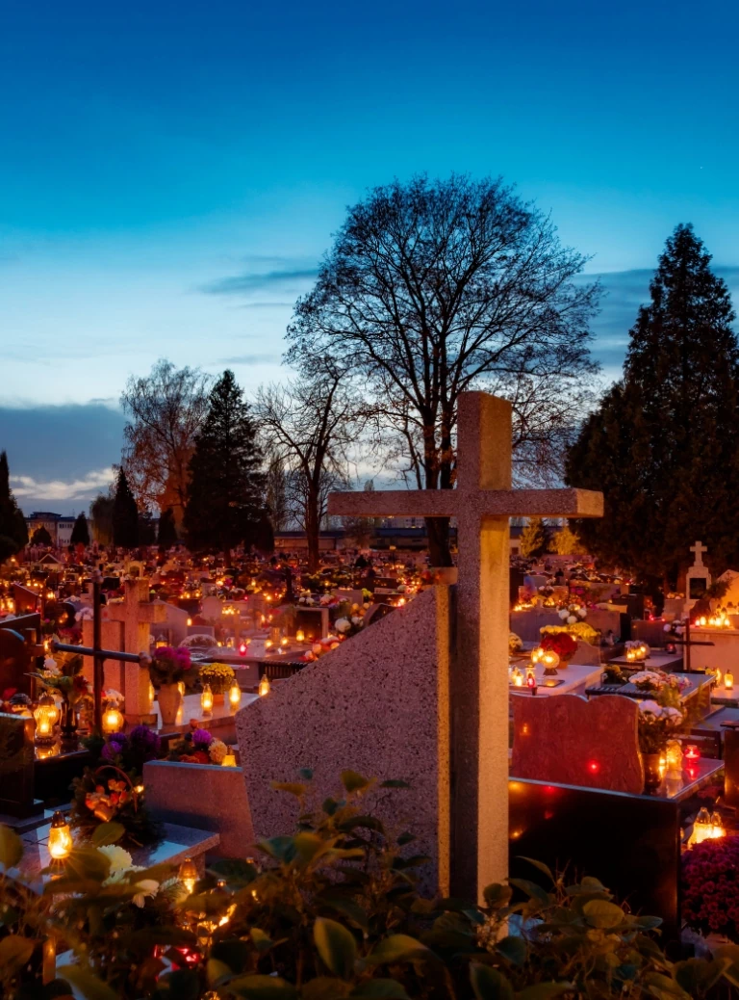

Zasiłek pogrzebowy
Wysokość, komu przysługuje i jak go uzyskać — pomagamy dopełnić formalności.
Zasiłek pogrzebowy to forma wsparcia finansowego dla osób, które ponoszą koszty związane z organizacją pogrzebu. Przysługuje on zarówno bliskim zmarłego, jak i osobom trzecim, które ponoszą koszty związane z pogrzebem. Zasiłki pogrzebowe wypłacane są przez oddziały ZUS. Środki te mogą zrekompensować w całości bądź częściowo wydatki związane m.in. z zakupem trumny lub urny, transportem zwłok, opłatą za wynajem kaplicy, przygotowaniem ciała do pogrzebu czy zakupem miejsca na cmentarzu.
Kiedy przysługuje zasiłek pogrzebowy?
Na podstawie ustawy o emeryturach i rentach z Funduszu Ubezpieczeń Społecznych zasiłek pogrzebowy przysługuje w razie pokrycia kosztów pogrzebu osoby:
- ubezpieczonej w ZUS,
- pobierającej emeryturę (w tym pomostową) lub rentę,
- pobierającej świadczenie przedemerytalne lub zasiłek przedemerytalny,
- która ma przyznane nauczycielskie świadczenie kompensacyjne,
- która w dniu śmierci nie miała ustalonego prawa do emerytury lub renty, lecz spełniała warunki do jej uzyskania i pobierania,
- która pobierała rentę socjalną,
- która zmarła w czasie pobierania zasiłku chorobowego albo świadczenia rehabilitacyjnego po ustaniu ubezpieczenia,
- która zmarła wskutek wypadku lub choroby zawodowej powstałej w szczególnych okolicznościach,
- która pobierała rentę z tytułu wypadku lub choroby zawodowej powstałej w szczególnych okolicznościach,
- cywilnej niewidomej ofiary działań wojennych, która pobierała świadczenie pieniężne.
Zasiłek przysługuje także po śmierci członka rodziny osoby wymienionej w punktach 1–4 i 9.
Komu przysługuje zasiłek pogrzebowy?
Wiele osób zastanawia się, czy zasiłek pogrzebowy należy się każdemu. Odpowiedź brzmi: nie. Jest to świadczenie warunkowe i uzależnione od spełnienia konkretnych przesłanek, w tym statusu ubezpieczeniowego osoby zmarłej. Mogą ubiegać się o niego:
- małżonek (wdowa i wdowiec),
- rodzice, w tym ojczym, macocha oraz osoby przysposabiające,
- dzieci własne, dzieci drugiego małżonka oraz dzieci przysposobione,
- dzieci przyjęte na wychowanie i utrzymanie przed osiągnięciem pełnoletności, w tym również w ramach rodziny zastępczej,
- wnuki, rodzeństwo, dziadkowie,
- osoby, nad którymi została ustanowiona opieka prawna.
W sytuacji, gdy osoba zmarła nie miała bliskich, świadczenie może zostać wypłacone także pracodawcy, domowi opieki społecznej, gminie, powiatowi lub osobie prywatnej – pod warunkiem, że pokryły oraz udokumentowały koszty poniesione w związku z pogrzebem. Kiedy koszty poniosła więcej niż jedna osoba lub podmiot, świadczenie zostaje podzielone proporcjonalnie do wydatków poniesionych na pochówek.
Zasiłek pogrzebowy z KRUS
Jeśli osoba zmarła była rolnikiem i była ubezpieczona w KRUS, rodzinie przysługuje zasiłek pogrzebowy z KRUS. Od 1 czerwca 2023 r. w przypadku zbiegu emerytury/renty rolniczej z KRUS z emeryturą/rentą z systemu powszechnego zasiłek po śmierci ubezpieczonego lub członka jego rodziny jest przyznawany i wypłacany przez ZUS.
Zasiłek pogrzebowy z MOPS
Jeśli na podstawie przepisów ustawy po śmierci osoby nie przysługuje zasiłek z ZUS/KRUS, można ubiegać się o zasiłek pogrzebowy z MOPS. Może być on wypłacony, jeśli ubezpieczona jest osoba wnioskująca o jego otrzymanie. Aby uzyskać zasiłek w MOPS, należy przedstawić dowód osobisty, kartę zgonu, odpis skróconego aktu zgonu oraz zaświadczenie, że nie posiada się uprawnień do zasiłku na pogrzeb z ZUS.
Wysokość zasiłku
Największe zainteresowanie budzi jednak kwestia tego, ile wynosi zasiłek pogrzebowy. Przysługuje on tylko z jednego tytułu, a jego wysokość jest stała – 7000 zł. Warunkiem uznania przez Zakład Ubezpieczeń Społecznych określonych wydatków za koszty pogrzebu jest ich powstanie po śmierci ubezpieczonego do momentu zakończenia ceremonii pogrzebowej w miejscu pochówku. Świadczenie to jest zwolnione z opodatkowania podatkiem dochodowym od osób fizycznych — nie trzeba go wykazywać w rocznym zeznaniu podatkowym PIT.
Wypłacenie zasiłku
Aby otrzymać zasiłek pogrzebowy z ZUS, należy złożyć odpowiednie dokumenty:
- wniosek o wypłatę zasiłku pogrzebowego (druk ZUS Z-12),
- skrócony odpis aktu zgonu (oryginał),
- oryginały rachunków poniesionych kosztów pogrzebu,
- dokumenty potwierdzające pokrewieństwo lub powinowactwo (skrócone odpisy aktów stanu cywilnego lub dowód osobisty zawierający wymagane dane).
WAŻNE: przedawnienie roszczeń o wypłatę zasiłku pogrzebowego następuje w razie niezgłoszenia wniosku o jego przyznanie w okresie 12 miesięcy od dnia śmierci osoby, po której świadczenie to przysługuje.
Zasiłek pogrzebowy a inne formy pomocy finansowej
Poza zasiłkiem pogrzebowym, w przypadku śmierci bliskiej osoby, można ubiegać się o inne świadczenia, a w tym m.in.:
- rentę rodzinną – przysługuje uprawnionym członkom rodziny zmarłego, który był emerytem, rencistą lub spełniał warunki do otrzymania tych świadczeń;
- odprawę pośmiertną – wypłacaną przez pracodawcę rodzinie zmarłego pracownika, zgodnie z przepisami Kodeksu pracy.
Ponadto, jeśli osoba zmarła była ubezpieczona na życie w prywatnym zakładzie ubezpieczeń, mogła wskazać na swojej polisie osobę uposażoną do odbioru całości lub części sumy ubezpieczenia. Tego rodzaju polisy mają często w swoim zakresie świadczenie z tytułu śmierci rodzica, małżonka lub dziecka.